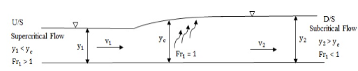

Laboratory 7 - Sample Report#
Title#
Purpose#
Examine behavior in open channels, in particular determining Manning’s n for a portion of a channel, and cerating and observing the alternate and sequent depths in a hydraulic jump.
Objective(s)#
Validate the manufacturer calibration using a V-Notch Weir.
Measure depth and flow over a rock bed (already in the flume) and determine Manning’s n for the rock bed and compare to literature values, and
Create a hydraulic jump, stabilizing it, then measuring the alternate and sequent depths and comparing these to calculated values based on the discharge.
Data Acquisition#
Part 1 This part is to validate the flow calibration chart and equation. 0. Set the slope to 1-percent.
Ensure flume tailgate is down.
Close the red valves for both pumps.
Start the pumps.
Move the depth logger to the same elevation as the height of V notch and reset the value to zero.
Make sure the manometer valves corresponding to the selected orifice(s) is(are) open.
Ensure the manometers are free of air bubbles.
Open the red valve(s) to let flow into the flume.
Move the depth logger till it touches the top of the water level. Measure the height. Record this measurement.
Record the manometer readings for each pump.
Repeat the procedure for 4 different flowrates keeping the slope constant. Use the red valves to adjust flowrates.
Part2 This can be conducted with the weir in place
Move the depth logger to top of one of the rocks and reset the value to zero.
Make sure the manometer valves corresponding to the selected orifice is/are open
Ensure the manometers are free of air bubbles.
Open the Orifice to let flow into the flume
Move the depth logger till it touches the top of the water level. Measure the height
Repeat the procedure for 2 other flowrates keep the slope constant
Repeat the above steps for a total of 3 different slopes
Part 3 This part will create a stable hydraulic jump. It is easiest to remove the weir.
Shut down the pumps, close the red valves, and remove the weir - everything else can be left as-is.
Set the slope to 4-percent (its going to look steep, but the machine can handle it!)
Start the pumps (you can try with just a single pump if you wish).
Raise the tailgate a lot!
Zero the depth gage to the channel bottom.
Open the red valve(s) to start the flow.
Raise the headgate to just above the water height.
Lower the tailgate a little bit at a time - you will likely observe two jumps, one near the head gate and one after the rocks. The stable one is the one at the head gate.
Lower the headgate until it just touches the water surface - you are forcing supercritical depth at this location. You should be able to create a stable jump about 0.5 to 1-foot from the head gate, and the water surface after the jump should be fairly established at the rocks.
Record the manometer readings for the pump(s)
Measure the flow depth befor the jump (halfway between the headgate and the jump should do). This is the alternate depth.
Measure the flow depth after the jump where the surface waves have dissipated (probably at the rocks). This is the sequent depth.
Data Analysis#
Part 1
Use the calibration chart provided to calculate the flowate based on the difference of the manometers’s readings.
Use the V-Notch weir data to calculate the flowrate based on those measurements.
Create a “Stage Discharge Plot” of “log of Flowrate (Manometer)”, Q (y-axis) ,”log of Flowrate (Weir)”, Q (y-axis)vs. “Depth” y (x-axis)
Tabulate all results
Part 2
For each flow depth (over the rock bed) calculate the wetted perimeter and hydraulic radius.
Use the calibration chart provided to calculate the flowate based on the difference of the manometers’s readings.
For each flowrate and depth calculate the Manning’s n. Make sure you are using consistent set of units.
Calculate the mean and standard deviation of the computed Manning’s n.
Create a plot of Flowrate, Q (y-axis) vs. \(K_nAR^{2/3}S^{1/2}\) (x-axis). The slope will be equal to 1/n. Compare this value obtained graphically with the mean value obtained from individual calculations
Tabulate all results Part3

Compute the Froude Number upstream and downstream of the stable jump
Using the flowrate from your calibration chart(s) determine the anticipated sequent depth downstream of the jump. You can use an on-line hydraulic jump calculator or the formula from your fluids textbook.
Compare the computed result to the measured result.
Discussion/Interpretation#
Interpretation Questions (for Report)
The Manning’s coefficient for a bed rock channel flowing partially full is in the range of 0.035 - 0.050. How do your values compare to this reported range?
Why is it important to know the channel bed material in a river or a stream?
Many rivers and streams have submerged vegetation. How would these vegetation affect Manning’s n?
What is the purpose of a Hydraulic Jump and where might it occur?
Errors between experiment and theory have multiple sources. Which of the following do you think are most significant in your experiment, and why?
inadequate theory (assumptions violated)
errors in experimental measurement (instrument precision)
calculation errors
Data Records#
Part 1 Some values are to be computed afterwards
Trial |
\(\Delta H\)-Pump 1 |
\(\Delta H\)-Pump 2 |
\(H_{weir}\) |
\(S_0\) |
\(Q_{chart}\) |
\(Q_{weir}\) |
|---|---|---|---|---|---|---|
1 |
||||||
2 |
||||||
3 |
||||||
4 |
||||||
5 |
Part 2
Some values are to be computed afterwards (if weir is removed, ignore that column). Three different slopes!
Trial |
\(\Delta H\)-Pump 1 |
\(\Delta H\)-Pump 2 |
\(H_{weir}\) |
\(S_0\) |
\(Q_{chart}\) |
\(Q_{weir}\) |
\(P_W\) |
\(R_h\) |
\(n\) |
|---|---|---|---|---|---|---|---|---|---|
1 |
|||||||||
2 |
|||||||||
3 |
Trial |
\(\Delta H\)-Pump 1 |
\(\Delta H\)-Pump 2 |
\(H_{weir}\) |
\(S_0\) |
\(Q_{chart}\) |
\(Q_{weir}\) |
\(P_W\) |
\(R_h\) |
\(n\) |
|---|---|---|---|---|---|---|---|---|---|
1 |
|||||||||
2 |
|||||||||
3 |
Trial |
\(\Delta H\)-Pump 1 |
\(\Delta H\)-Pump 2 |
\(H_{weir}\) |
\(S_0\) |
\(Q_{chart}\) |
\(Q_{weir}\) |
\(P_W\) |
\(R_h\) |
\(n\) |
|---|---|---|---|---|---|---|---|---|---|
1 |
|||||||||
2 |
|||||||||
3 |
Part 3 This will involve a single experiment, take a photograph of your jump and include it in the report.
\(\Delta H\)-Pump 1 |
\(\Delta H\)-Pump 2 |
\(S_0\) |
\(Q_{chart}\) |
\(h_{up}\) |
\(h_{down}\) |
|---|---|---|---|---|---|